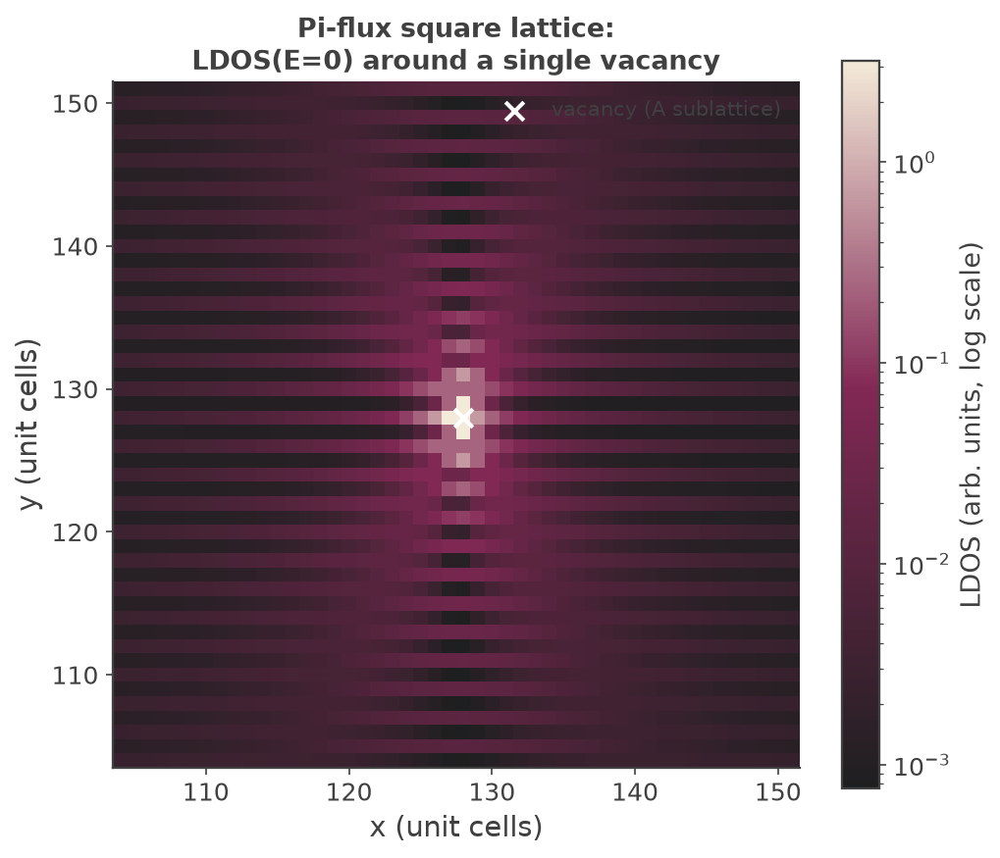
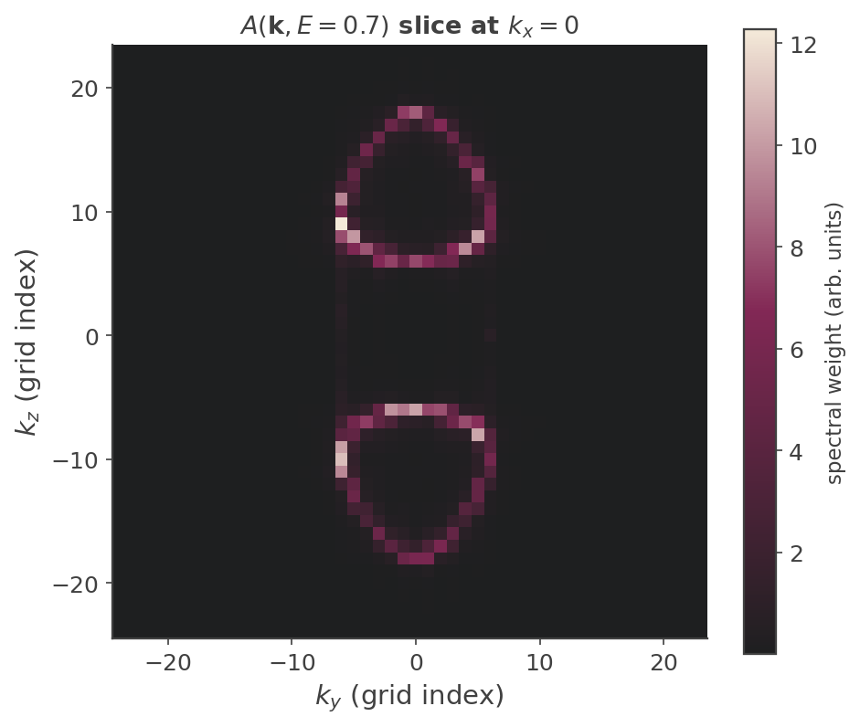

Local & Spectral Maps (Markov Estimator)
Real-space and momentum-space maps: a linear-scaling stochastic estimator¶
Most KITE calculations reduce a physical observable to a trace over the whole sample, e.g. the density of
states \(\rho(E)=\tfrac1D\,\mathrm{Tr}\,\delta(E-\hat H)\), and evaluate that trace stochastically with a handful
of random vectors. But sometimes the object of interest is not a single number for the whole sample — it is a
field: the local density of states \(\rho(\mathbf r,E)=\langle \mathbf r|\delta(E-\hat H)|\mathbf r\rangle\)
at every site, or the spectral function \(A(\mathbf k,E)=\langle \mathbf k|\delta(E-\hat H)|\mathbf k\rangle\)
at every momentum. ldos_map() and spectral_map()
compute exactly these two fields, over all sites / all momenta simultaneously, in a single linear-scaling pass.
Why the naive approach is expensive, and how a random-vector estimator fixes it¶
The already-documented single-target calculations — ldos() for one chosen site
and arpes() for one chosen \(\mathbf k\)-point — each run the full Chebyshev
recursion starting from one deterministic seed vector: a single site ket \(|\mathbf r_0\rangle\), or a single
Bloch plane wave \(|\mathbf k_0\rangle\). Each such run costs \(O(N_\text{moments}\times D)\) operations, where \(D\)
is the number of orbitals in the sample. To obtain the full map this way you would repeat the recursion once
per site (or per \(\mathbf k\)-point) — \(D\) independent recursions, for a total cost \(O(N_\text{moments}\times D^2)\),
quadratic in system size, and hopeless at the scales KITE targets.
The map estimators avoid the outer loop entirely. They run the recursion from a single random-phase vector
where \(j\) runs over all orbitals of the sample (Src/Tools/Random.cpp's initA() generates exactly this
unit-modulus phase for the complex Hamiltonian instantiation; Src/Vector/KPM_Vector2D.cpp::initiate_vector()
assigns one such entry per site). The key statistical identity is
A single recursion carries information about all starting sites at once, and each map is filled from one
\(O(N_\text{moments}\times D)\) pass — linear scaling. The price is stochastic noise, controlled by the number
of random vectors vectors_.
What the estimator actually returns: \(f(H)^2\), not \(f(H)\)¶
This is the one point that must be stated carefully, because it drives the normalization. Reading
Src/Simulation/SimulationLDoS.cpp::ldos(), the per-site map is built as a Chebyshev reconstruction
\(f(\hat H)=\sum_n c_n T_n(\hat H)\) applied to \(|\xi\rangle\), then
Since \(|\xi_r|=1\), taking the expectation over the random phases gives
using hermiticity of \(f(\hat H)\) in the last step. The estimator returns the diagonal of \(f(\hat H)^2\), not of \(f(\hat H)\). This is intrinsic to a positive-definite (squared-amplitude) estimator, and it is precisely what lets the Markov bound apply below — but it means the reconstruction must be chosen so that \(f(\hat H)^2\), not \(f(\hat H)\), approximates a delta function.
KITE handles this with a deliberate rescaling. If \(\delta_s(x)=e^{-x^2/2s^2}/(s\sqrt{2\pi})\) is a normalized
Gaussian, then \([\delta_s(x)]^2=\tfrac{1}{2s\sqrt\pi}\,\delta_{s/\sqrt2}(x)\) — a normalized Gaussian of width
\(s/\sqrt2\) carrying total weight \(1/(2s\sqrt\pi)\). So to obtain an LDOS broadened by the requested width
\(\sigma\), KITE builds \(f=\delta_s\) with \(s=\sqrt2\,\sigma\) and multiplies by \(2s\sqrt\pi=\sqrt{8\pi}\,\sigma\) to
renormalize \(f^2\) back to unit weight — exactly the factor = √(8π)·σ/energy_scale prefactor used in the code
(the extra \(1/\text{energy\_scale}\) converts the delta from the rescaled Chebyshev energy back to physical
units). In summary,
exactly the local density of states, broadened by sigma_.
The Markov-inequality contribution: bounding per-site error without self-averaging¶
For a global quantity such as the total DOS, the stochastic-trace relative error scales as \(1/\sqrt{N_R D}\): the trace averages over all \(D\) sites and over \(N_R\) random vectors, so a larger sample is itself a larger sample average — the estimator self-averages, and the error shrinks as the system grows even at fixed \(N_R\).
A local observable has no such luxury. \(\rho(r,E)\) at one site is estimated only from the \(N_R\) random-vector realizations at that site; enlarging the sample adds more sites to estimate, not more samples of the site you care about. In a disordered or inhomogeneous system the true site-to-site variation of \(\rho(r,E)\) does not diminish with system size — it is physical. So the naive intuition "bigger system \(\Rightarrow\) smaller error" fails for a map: local observables lack self-averaging.
This is the problem addressed by Veiga, Pinheiro, Santos Pires & Viana Parente Lopes1. Their observation is that the map estimator above is positive-definite — each sample \(\hat X_r\ge 0\) — and a nonnegative random variable obeys Markov's inequality,
which yields a per-site, distribution-free confidence bound on the sampling error that holds regardless of
self-averaging — the right tool precisely because the usual \(1/\sqrt{N_R D}\) argument is unavailable. (KITE also
reports the empirical per-site stochastic standard error directly: the second row of the output dataset is a
running Welford variance over the vectors_ realizations.) This page reconstructs the general logic
of why a Markov bound applies here; the paper's precise quantitative bound is not reproduced — consult the
reference directly for the exact constant.
The practical consequence: increasing vectors_ reduces the per-site noise as \(1/\sqrt{\text{vectors\_}}\)
(standard Monte-Carlo), with the Markov argument guaranteeing the relative error at each site is controlled —
which is why the examples below can shrink from research scale (\(2048^2\) lattice, 64 vectors) down to laptop
scale (\(256^2\), 32 vectors) and still resolve the physics, just noisier.
ldos_map() — π-flux lattice, LDOS around a single vacancy¶
examples/piflux_ldos_map.py builds a two-sublattice square lattice (\(\mathbf a_1=[2,0]\),
\(\mathbf a_2=[0,1]\); A at \([0,0]\), B at \([1,0]\)) with a staggered-sign hopping pattern: uniform \(-t\) on the
horizontal A–B bonds, but \(+t\) on the B–B and \(-t\) on the A–A vertical bonds. Going around one plaquette the
signs multiply to \(-1\) — each plaquette is threaded by exactly \(\pi\) flux, which folds the square-lattice
spectrum onto a Dirac cone at \(E=0\), a bipartite-lattice stand-in for graphene-like low-energy physics.
A single vacancy is placed on the A sublattice at the sample center via kite.StructuralDisorder.
A vacancy at the Dirac point is a physically meaningful test: a missing site acts as a resonant
(zero-energy) scatterer in a Dirac system, producing a characteristic LDOS perturbation — suppression at the
defect and slowly decaying, oscillatory (Friedel-like) structure around it — rather than a featureless uniform
map:

The verified result: the LDOS is exactly zero at the vacancy site itself (there is no A orbital there to
carry weight); the brightest response sits one lattice site off-center, essentially ringing the vacancy; and
the perturbation decays outward with visible oscillatory structure. That oscillation spans roughly two orders
of magnitude between background and peak, so a linear color scale collapses everything but the single
brightest pixel — the figure above uses a log color scale, which is what makes the decaying ring structure
visible. There is no KITE-tools step for ldos_map; the /Calculation/ldos_map/Map dataset
(shape (2, Sizet), row 0 the mean, row 1 the stochastic standard error) is read directly with h5py.
spectral_map() — Weyl semimetal, constant-energy contours¶
examples/weyl_spectral_map.py builds a two-sublattice cubic lattice with a mass term (\(\pm mt\)
on-site) and complex nearest-neighbor hoppings realizing a pair of Weyl nodes — point-like band touchings
with linear dispersion in all three momentum directions. spectral_map computes \(A(\mathbf k,E)\) on
the reciprocal grid dual to the supercell, at a fixed energy \(E=0.7\) deliberately away from the node
energy, so the constant-energy surface is a pair of small spheres around the two nodes rather than two points.
A \((k_y,k_z)\) slice at \(k_x=0\) therefore cuts each Weyl sphere in a closed ring:

The verified result is exactly that: two clean closed-ring contours in the \((k_y,k_z)\) plane — the iso-energy cut through two separated Weyl cones.
The open-boundary caveat (real physics, not an artifact — mentioned here, not illustrated). The momentum
resolution is produced by wrapping the Chebyshev recursion between an inverse and a forward FFT — the k-space
sibling of the real-space identity above, with the same \(f^2\!\to\!\delta\) renormalization. Crucially, this FFT
runs over all declared lattice axes. A momentum label is only physically meaningful along a direction with
translational symmetry; along an open (hard-wall) boundary momentum is not conserved, so Fourier-transforming
that axis smears the spectral weight into a flat, featureless distribution instead of sharp peaks. The example
sets boundaries=["open","random","random"] on purpose — \(x\) open, \(y,z\) periodic (twist-averaged) —
so \(k_x\) itself is not a meaningful label; that is exactly why the figure above only shows the \((k_y,k_z)\) slice
and never plots anything against \(k_x\). At this lattice size the periodic-axis resolution isn't clean enough to
make a convincing side-by-side comparison of sharp-vs-smeared peaks, so no such plot is shown here — the point is
made as a caveat in words: spectral_map() gives meaningful \(\mathbf k\)-resolution only along
periodic/twist-averaged directions.
Relationship to the single-target calculations¶
ldos_map/spectral_map are the "all-at-once" stochastic siblings of the deterministic
single-target routines:
| single target (deterministic seed) | full field (random-phase seed) |
|---|---|
ldos() — one site $ |
\mathbf r_0\rangle$ |
arpes() — one Bloch state $ |
\mathbf k_0\rangle$ |
Both map routines are compiled only for the complex Hamiltonian instantiation, so
is_complex=True is mandatory even for a real-hopping lattice — otherwise the branch is compiled away
and the calculation silently produces no output dataset at all. Both trade the exactness of a single-point
evaluation for linear scaling and per-site stochastic error, with the number of random vectors as the accuracy
knob and the Markov bound as the guarantee that the per-site error is controlled despite the absence of
self-averaging.
Example
Get more familiar with KITE: run examples/piflux_ldos_map.py and
examples/weyl_spectral_map.py yourself, and try varying vectors_ to
see the sampling noise shrink.
-
H. P. Veiga, D. R. Pinheiro, J. P. Santos Pires, and J. M. Viana Parente Lopes, "Markov Inequality as a Tool for Linear-Scaling Estimation of Local Observables," Phys. Rev. Research, doi:10.1103/qb1w-44r1, arXiv:2510.21688. ↩